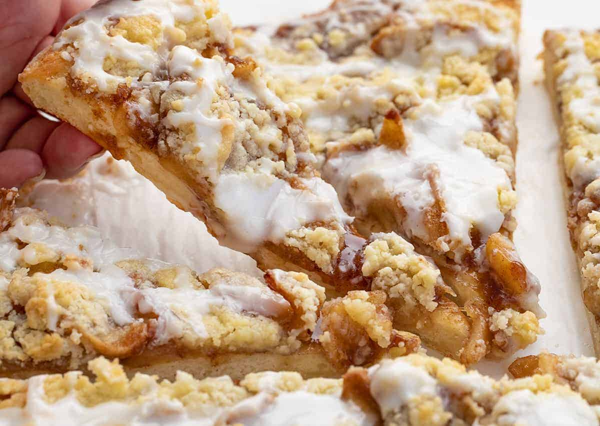

Apple Pizza Dessert

Ingredients
- Frozen bread dough; thawed one-half frozen loaf
- Cream cheese softened 1/4 cup Sugar
- 1 Egg
- 1 tsp Vanilla
- 4 cup Apples peel & thinly sliced
- 2/3 cup Sugar
- 1/4 cup Flour
- 1 tsp Cinnamon
Procedure
-
STEP 1
Place bread dough on greased 12 inch deep dish pizza pan. When thawed completely, dough on bottom and 1/2 inch up sides of pan. Let rest 15 minutes. Combine cream cheese, 1/4 cup sugar, egg and vanilla until smooth. Spread over bottom of crust. Combine apples, 2/3 cup sugar, 1/4 cup flour and cinnamon. Arrange evenly over cream cheese mixture. -
STEP 2
In a small mixing bowl, combine 1/3 cup flour and brown sugar. Cut in margarine until mixture is crumbly. Add almonds. Sprinkle evenly over apples. Bake at 350F for about 40 minutes, or until golden brown. Serve warm or cold, with whipping cream, whipped topping or ice cream